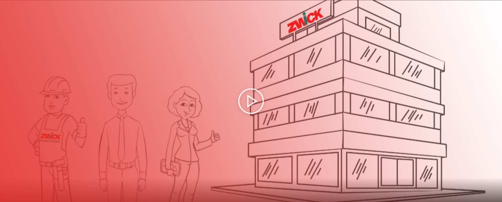
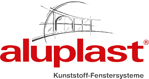
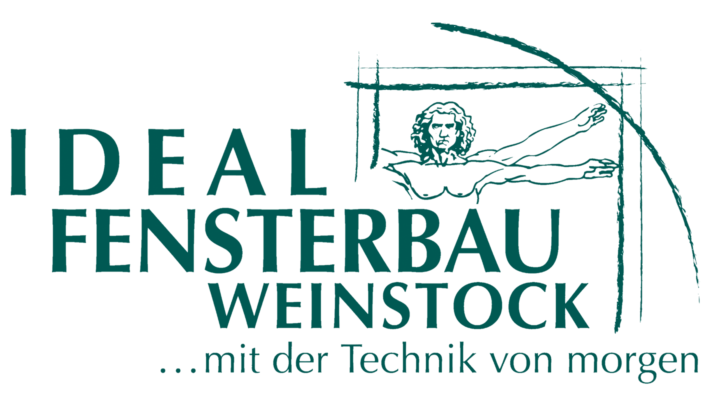

Referenzen
Fenstertausch — vorher und nachher
Schieberegler bewegen zum Vergleichen.


⇔
Das passende Fenstersystem für jedes Bauvorhaben — Kunststoff, Kunststoff/Aluminium oder Holz/Aluminium. Wir beraten Sie persönlich.
Hervorragende Wärmedämmung, pflegeleicht und langlebig. Die beliebteste Wahl für Sanierung und Neubau in der Region.
Innenseitig Kunststoff, außen Aluminium — maximaler Witterungsschutz bei minimalem Pflegeaufwand. Ideal für anspruchsvolle Architektur.
Natürliche Wärme innen, robuster Alu-Mantel außen. Für höchste Ansprüche an Optik und Wärmedämmung.

Wir arbeiten ausschließlich mit führenden Systemherstellern zusammen.


Schieberegler bewegen zum Vergleichen.
„Liebes Zwick-Team, vielen herzlichen Dank für den perfekten Einbau von Fenstern und Haustüre. Das neue Gesicht des Hauses wird von allen bewundert."
„In zwei Tagen sechs neue Fenster — und hinterher eine staubsaugersaubere Wohnung! Das Team war schnell, kompetent und überaus freundlich."
„Herr Gäßler hat sich sehr viel Zeit genommen und alles genau erklärt. Beratung, Tipps und Vorschläge waren sehr hilfreich. Sehr zu empfehlen!"
Alle Fenstermodelle zum Anfassen — persönliche Beratung nach Terminvereinbarung in Affing-Mühlhausen.
Termin vereinbaren →